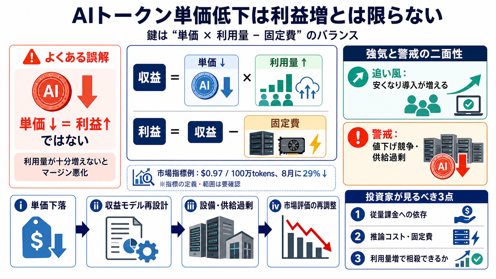

Understanding LLM Cost Per Token: A 2026 Practical Guide
Token pricing might look simple on the surface — a few cents per million tokens, split into input and output — but under…

AIの「トークン課金（推論・生成）」は、計算資源の需給で価格が動きます。単価が下がっても、利益や株式評価に直結しない“連鎖リスク”がある—という視点です。
「トークン当たりコストが下がる＝企業利益が増える」とは限りません。需要の伸びが追いつかない場合、収益構造が崩れる可能性があります。
収益は基本的に 単価 × 利用量 で決まります。さらに固定費（設備・運用）が重いと、単価が下がって量が増えなければ利益が出にくくなります。
推論の課金モデル（例: クラウドの従量）は「トークン当たり価格」を前提に成立します。ところが、推論ワークロードがよりローカルで低コストになると、この前提が揺らぎます。
Silicon Dataの市場コスト指標は「100万トークン当たり0.97ドル」まで下落し、8月だけで29%急落とされています。背景にはクローズドモデル間の値下げがある、という文脈です。
AI導入が進む（＝使われる）こと自体は追い風です。だが、コスト低下が需要増のスピードを上回ると、インフラ供給過剰のリスクが残ります。
記事の主張は「単価下落 → 収益モデル再設計 → 設備・供給の過剰 → 市場評価（バリュエーション）の再調整」という連鎖です。
論点は「単価が下がるか」ではなく、「量がどれだけ増えて相殺できるか」です。ここが曖昧だと、利益が減るシナリオが優勢になり得ます。
Goldman Sachsのデルタ・ワン（Delta One）デスクは、AIQ（Global X Artificial Intelligence & Technology ETF）などの価格下落圧力が、最終的にSPYのような株式にも波及し得ると警告しています。
投資判断では「AI成長」ではなく、対象企業の収益部分がトークン単価低下の影響をどれほど受けるか、そして利用量増がどれほど見込めるかを確認する必要があります。
指標の下落が、すべての企業・モデルに同一の形で当てはまる保証はありません。提供形態・地域・モデル種類・契約条件で利益構造は変わります。
ここでいう「トークン価格急落」は、LLM利用に伴う計算コストを“トークン当たり”で測る文脈です。重要なのは、単価下落が利益に直結しない点です。
数値は説得力を持ちますが、指標の定義・範囲や、下落の恩恵が特定の提供形態に集中していないかは別途検証が必要です。前提が見えない場合、評価の精度は落ちます。
Token pricing might look simple on the surface — a few cents per million tokens, split into input and output — but under…
The LLM Token Expenditure Index measures the effective expenditure level of the large-language-model market, expressed a…
Even at the frontier tier, the collapse is dramatic. Claude Sonnet 4.6 -- a model that outperforms GPT-4 on every benchm…
With consumers and enterprises adopting AI agents, token consumption is expected to multiply 24 times, to 120 quadrillio…
Silicon Data's index tracks the going rate on the market for a large-language model token. A sharp slide in prices can …